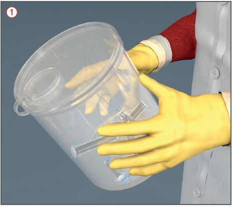

Je nach Arbeitsbereich kann ein direkter Kontakt zu Krankheitserregern möglich sein und somit eine Infektionsgefährdung bestehen.
Bei Tätigkeiten mit Reinigungs- und Flächendesinfektionsmitteln können reizende, sensibilisierende oder ätzende Stoffe auftreten und bei Hautkontakt, Verschlucken oder Einatmen Gesundheitsschäden verursachen.
Allgemeines
Vorgaben des Hygieneplans der Einrichtung einhalten.
Beschäftigte regelmäßig anhand der Betriebsanweisungen über die auftretenden Gefahren und die erforderlichen Schutzmaßnahmen unterweisen.
Beschäftigten über anlassbezogene Hygienemaßnahmen und deren Gründe unterrichten.
Schutzmaßnahmen
Schutzmaßnahmen in Abhängigkeit vom Ergebnis der Gefährdungsbeurteilung tätigkeits- und arbeitsplatzbezogen vornehmen.
Mischverhältnisse oder Dosierung der Reinigungs- und Desinfektionslösungen nach Hygieneplan einhalten.
Handwaschplätze mit fließendem warmem und kaltem Wasser, Spendern für Hautreinigungsmittel und Händedesinfektionsmittel sowie Einmalhandtüchern zur Verfügung stellen.
Hautschutz-, Hautreinigungs- und Hautpflegemaßnahmen gemäß Hautschutzplan.
Geeignete Schutzhandschuhe tragen. Auswahlhilfen werden im Gefahrstoffinformationssystem der BG BAU – WINGIS (www.wingis-online.de) – angeboten.
Vom Arbeitsplatz getrennte Umkleidemöglichkeiten zur Verfügung stellen.
An Arbeitsplätzen nicht essen, trinken oder rauchen. Hierzu Pausenräume/-bereiche zur Verfügung stellen.
Zusätzliche Hinweise für Arbeitsbereiche mit Infektionsgefährdung
Zur Verfügung gestellte persönliche Schutzausrüstung, z. B. flüssigkeitsdichte Schutzkleidung bzw. Fußbekleidung, Schutzhandschuhe, Augen-/Gesichtsschutz, Atemschutz verwenden.
Getragene Schutzkleidung von anderer Kleidung getrennt aufbewahren.
Schutzkleidung oder kontaminierte Arbeitskleidung nicht zur Reinigung mit nach Hause nehmen.
Zum Händetrocknen Einmalgebrauchshandtücher verwenden.
In diesen Arbeitsbereichen keine Schmuckstücke tragen (auch keine Uhren oder Eheringe) und nicht essen, trinken oder rauchen.
Nach Kontakt zu potenziell infektiösen Materialien oder Oberflächen hygienische Händedesinfektion durchführen, ggf. Augen oder Schleimhäute mit Wasser o. ä. spülen.
Nach Verletzung durch Instrumente (z. B. Nadelstichverletzung) Erstmaßnahmen zur Infektionsvermeidung durchführen (Förderung des Blutflusses, viruzides Hautdesinfektionsmittel, Verband) und umgehend einen D-Arzt aufsuchen.
Zusätzliche Hinweise für den Umgang mit benutzter Wäsche
Benutzte Wäsche unmittelbar im Arbeitsbereich in ausreichend widerstandsfähigen, dichten und eindeutig gekennzeichneten Behältnissen sammeln (ggf. gesondertes Erfassen entsprechend besonderen Waschverfahren oder nasser Wäsche in dichten Behältnissen).
Wäschesäcke nur geschlossen transportieren, nicht werfen oder stauchen.
Direktes Berühren der Wäsche vermeiden.

Zusätzliche Hinweise für die Abfallentsorgung
Spitze, scharfe und zerbrechliche medizinische Instrumente (Spritzen, Kanülen) unmittelbar nach Gebrauch durch den Anwender in fest verschließbaren, durchstichsicheren Abfallbehältnissen (Einweg-Abwurfboxen) sammeln. Diese nur verschlossen transportieren.
Abfälle unmittelbar am Ort ihres Anfalls in reißfesten, feuchtigkeitsbeständigen, dichten und gekennzeichneten Behältnissen sammeln und in sicher verschlossenen Behältnissen zur zentralen Sammelstelle befördern.
Infektiösen Abfall von dem übrigen Abfall getrennt sammeln und entsorgen.
Beim innerbetrieblichen Transport der Abfälle sicherstellen, dass ein Austreten der Abfälle vermieden wird (Verschlusszange benutzen) .
Nicht in Abfallbehältnisse hineingreifen.
Ggf. Transporthilfen nutzen.
Arbeitsmedizinische Vorsorge
Arbeitsmedizinische Vorsorge nach Ergebnis der Gefährdungsbeurteilung veranlassen (Pflichtvorsorge) oder anbieten (Angebotsvorsorge). Hierzu Beratung durch den Betriebsarzt.
Beschäftigungsbeschränkungen in Arbeitsbereichen mit erhöhter Infektionsgefahr
Nur Personen beschäftigen, deren Gesundheitszustand regelmäßig überwacht wird.
Arbeitsmedizinische Vorsorge für die Beschäftigten veranlassen.
Entsprechend der Gefährdungsbeurteilung ggf. Schutzimpfungen (z. B. Hepatitis A und B, Masern etc.).
Keine werdenden und stillenden Mütter in diesen Bereichen einsetzen.
Jugendliche nur unter Aufsicht und zur Erreichung des Ausbildungszieles in diesen Bereichen einsetzen.